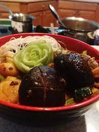

Adeptus' Temptation

A complex, famous Liyue cuisine
This great recipe can be found in the amazing Genshin Impact. If Honkai impact showed us Mei's amazing recipes then I wouldn't be on Genshin now, would I?
Looking for a delicious meal that will increase your party memebers' attack by 260-327 and crit rate by 8-12% for 300 seconds? You've come to the right place great warrior!
Ingredients
- 4 slices of ham
- 3 crabs
- 3 pieces of shrimp
- 3 matsuke
Steps
- Find a cooking spot and make a fire. This step may be skipped if near a restaurant. Be careful not to burn yourself.
- Submerge all your Ingredients in the pot and slowly boil in soup stock.
- That was in your imagination. In reality, aka game, all you have to do is tap the dish ou wish to prepare.
- Make sure to tap the screen when the arrow is at the green section for a perfect meal.
Disclaimer:This recipe scribbled from memory alone was enough to urge the adepti to once again return to the world of men.
Credit: Genshin Impact